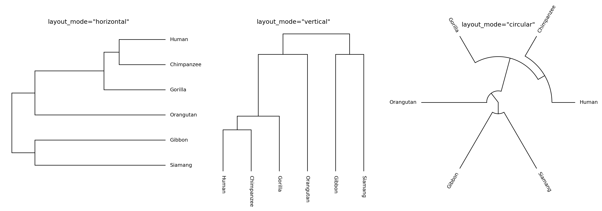
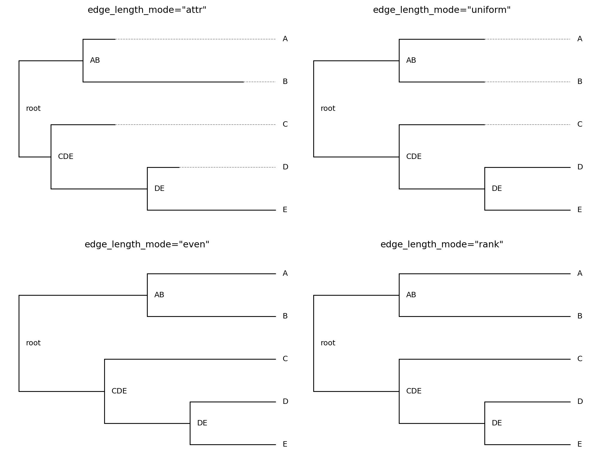
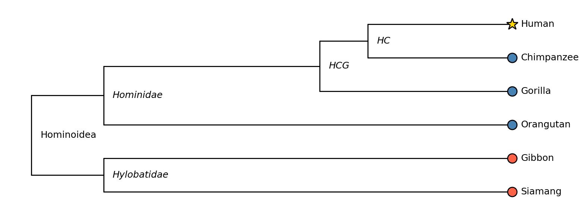
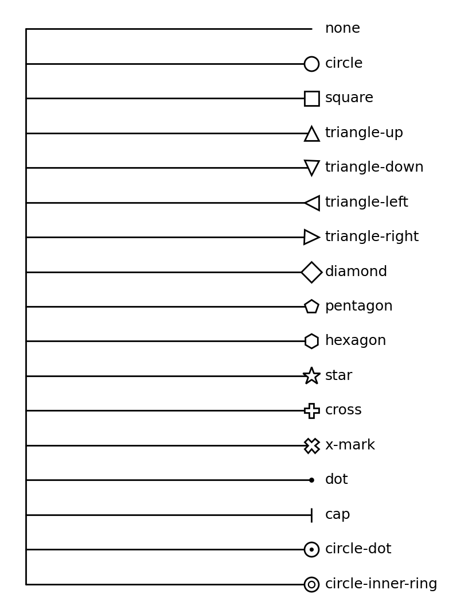

Visualization: Layout & Styling¶
This page covers the full layout and styling API of tralda.visualization: how node positions
are computed, and how colors, symbols, and labels are resolved. See
Visualization for installation and the one-liner plot_tree API, and
Examples for complete end-to-end examples.
Layout modes¶
TreeLayout computes a screen-space (x, y) position
for every node. The orientation is controlled by layout_mode
(LayoutMode):
"horizontal"— root on the left, leaves on the right (the default)."vertical"— root at the top, leaves at the bottom."circular"— root at the centre, leaves on the outside.
from tralda.visualization.layout import TreeLayout
from tralda.visualization.matplotlib_renderer import MatplotlibRenderer
for mode in ("horizontal", "vertical", "circular"):
layout = TreeLayout(T, layout_mode=mode)
fig, ax = MatplotlibRenderer(layout).render()

A single TreeLayout can also be switched between modes in place with
compute_positions(), without
recomputing depths:
Edge-length modes¶
edge_length_mode (EdgeLengthMode) controls how
far along the depth axis each node is placed:
"attr"(default) — uses a node attribute (edge_length_attr, default"dist") as the branch length. Leaves may end up at different depths if the tree isn't ultrametric."uniform"— every edge has length 1, regardless of anydistattribute."even"— cladogram style: all leaves are aligned at the same depth, with the remaining space distributed evenly among the edges on each root-to-leaf path. Useful for trees with no meaningful branch lengths (e.g. a taxonomy)."rank"— nodes are placed at their topological depth (number of edges from the root); leaves are then extended to the maximum depth so they align, exactly like"even"but based on integer ranks rather than continuous spacing.
When leaves end up short of the maximum depth ("attr" / "uniform"), a dashed ghost segment
extends them so that all leaf labels stay aligned. Ghost segments can be disabled with
show_ghost_segments=False on either renderer.

Node rank modes¶
node_rank_mode (NodeRankMode) controls where an
internal node sits along the axis perpendicular to depth (its "rank"), relative to its children:
"mean"(default) — midpoint between the first and last child."first"/"last"— aligned with the first or last child."node"— every node (leaf and internal) gets its own unique rank slot. This spreads internal nodes out vertically/radially so thatshow_internal_labels=Truenever produces overlapping labels — useful for trees where you want to label every ancestor, as in the mammal phylogeny example.
Styling: NodeStyle and TreeStyle¶
NodeStyle is a partial style specification: every field
defaults to None, meaning "inherit from the layer below". It covers three groups of fields:
- symbol —
symbol,symbol_size,symbol_color,symbol_edge_color,symbol_lw,symbol_zorder - incoming edge (from the node's parent) —
edge_color,edge_lw,edge_ls - label —
label_color,label_fontsize,label_fontweight,label_fontstyle
TreeStyle resolves a fully-specified NodeStyle for
every node by layering, in order (later wins):
default— a baseNodeStyleapplied to every node.style_fn(node, layout_mode)— an optional callable returning a partialNodeStyle(orNone) computed per node.node_overrides— an optionaldict[TreeNode, NodeStyle]for one-off, per-node tweaks, applied last.
from tralda.visualization.style import NodeStyle, TreeStyle
def style_fn(node, layout_mode):
if node.is_leaf():
return NodeStyle(symbol="circle", symbol_color="steelblue")
return None # fall back to the default for internal nodes
tree_style = TreeStyle(
default=NodeStyle(edge_color="grey"),
style_fn=style_fn,
node_overrides={some_node: NodeStyle(symbol="star", symbol_color="gold")},
)
Structural fallbacks — node_symbol, root_symbol, leaf_symbol, internal_symbol — supply a
symbol whenever nothing else set one, which is convenient when only some node kinds need an
explicit symbol.
TreeStyle.from_maps¶
For the common case of "look up the symbol/color from a node attribute",
TreeStyle.from_maps() builds the style_fn
for you from plain dictionaries:
tree_style = TreeStyle.from_maps(
symbol_attr="event",
symbol_map={"duplication": "square", "loss": "cap"},
node_color_attr="species",
node_color_map={"human": "steelblue", "mouse": "tomato"},
)
Putting all three mechanisms together — attribute-based coloring, a custom style_fn, and a
node_overrides highlight for one specific node:

tree_style = TreeStyle.from_maps(
node_color_attr="clade",
node_color_map={"great_ape": "steelblue", "gibbon": "tomato"},
leaf_symbol="circle",
)
tree_style.node_overrides = {
human_node: NodeStyle(symbol="star", symbol_color="gold", symbol_edge_color="black"),
}
Built-in symbols¶
Symbols are looked up by name in a shared cross-renderer table (tralda.visualization._symbol_defs).
Both renderers accept tralda's canonical names, matplotlib marker strings (e.g. "^"), or Plotly
marker names — whichever notation you're more used to.

"dot" and "cap" are edge-style symbols: they follow the incoming edge's color/width instead
of symbol_color — handy for lightweight event markers along a branch. "circle-dot" and
"circle-inner-ring" are composite symbols (an outer marker plus an inner overlay).
Custom symbols¶
For the matplotlib backend, register a custom drawer globally with
register_symbol():
from tralda.visualization.matplotlib_renderer import register_symbol
def draw_flag(ax, x, y, ns, *, angle=0.0, layout_mode=None, **_):
ax.plot(x, y, marker=(3, 0, angle), ms=ns.symbol_size, mfc=ns.symbol_color)
register_symbol("flag", draw_flag)
Once registered, "flag" is available by name to any TreeStyle / NodeStyle used with
MatplotlibRenderer.
Labels¶
Both renderers draw a label for every node with a label attribute (leaves by default; pass
show_internal_labels=True to also label internal nodes, including the root). show_labels=False
suppresses leaf labels. Label placement (offset, rotation, alignment) is derived automatically
from the layout mode, including the outward-flip needed for circular labels on the left half of
the plot.
Rescaling and figure sizing¶
Both renderers normalise the depth axis to [0, 1] by default (rescale_depth=True), so that
symbol and font sizes (specified in points/pixels) stay visually consistent regardless of the
unit system used for branch lengths. MatplotlibRenderer also derives a default figsize from
the leaf count and layout mode when none is given; pass figsize=(...) or an existing ax to
override it. PlotlyRenderer similarly derives default width/height.